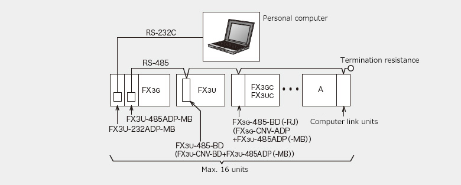

MELSEC-F series Computer Link

Features
Data link can be made between computer as master station and multiple PLCs.
Because data link is performed by commands sent from the computer, this is suitable for management and control systems where the computer is the main controller.
- 1.Using RS-485 communication devices, up to 16 FX and A PLCs can be connected and send/receive data according to commands from a computer.
- 2.Using RS-232C communication devices, data can be sent/received 1:1 with a computer.
- 3.Protocol supports PLC's computer link dedicated protocol (formats 1 and 4).
Applicable communication device
RS-232C communication device
| Model | Applicable FX PLC | ||||||||||
|---|---|---|---|---|---|---|---|---|---|---|---|
| FX 3S |
FX 3G |
FX 3U |
FX 3GC |
FX 3UC |
|||||||
| Function expansion board | FX3G-232-BD | *5 ○ Max. 1 unit |
○ Max. 2 units *1 |
× | × | × | |||||
| FX3U-232-BD | × | × | ○ Max. 1 unit |
× | *2 ○ Max. 1 unit |
||||||
| Specific adapter | FX3U-232ADP-MB | *6 ○ Max. 1 unit |
*3 ○ Max. 2 units *1 |
*4 ○ Max. 2 units |
○ Max. 2 units |
*4 ○ Max. 2 units |
|||||
- *1FX3G 14 pt, 24 pt models: 1 board. 40 pt, 60 pt models: 2 boards.
- *2Can be connected only to the FX3UC-32MT-LT(-2).
- *3When connecting to FX3G, FX3G-CNV-ADP is required.
- *4When connecting to FX3U, FX3UC-32MT-LT(-2), function expansion board is required.
- *5Function expansion board and FX3S-CNV-ADP cannot be used together.
- *6When connecting to FX3S, FX3S-CNV-ADP is required.
RS-485 communication device
| Model | Applicable FX PLC | ||||||||||
|---|---|---|---|---|---|---|---|---|---|---|---|
| FX 3S |
FX 3G |
FX 3U |
FX 3GC |
FX 3UC |
|||||||
| Function expansion board | FX3G-485-BD | *5 ○ Max. 1 unit |
○ Max. 2 units *1 |
× | × | × | |||||
| FX3G-485-BD-RJ | *5 ○ Max. 1 unit |
○ Max. 2 units *1 |
× | × | × | ||||||
| FX3U-485-BD | × | × | ○ Max. 1 unit |
× | *2 ○ Max. 1 unit |
||||||
| Specific adapter | FX3U-485ADP-MB | *6 ○ Max. 1 unit |
*3 ○ Max. 2 units *1 |
*4 ○ Max. 2 units |
○ Max. 2 units |
*4 ○ Max. 2 units |
|||||
- *1FX3G 14 pt, 24 pt models: 1 board. 40 pt, 60 pt models: 2 boards.
- *2Can be connected only to the FX3UC-32MT-LT(-2).
- *3When connecting to FX3G, FX3G-CNV-ADP is required.
- *4When connecting to FX3U, FX3UC-32MT-LT(-2), function expansion board is required.
- *5Function expansion board and FX3S-CNV-ADP cannot be used together.
- *6When connecting to FX3S, FX3S-CNV-ADP is required.
System configuration example
1 : N connection using the RS-485 (422) communication

1 : 1 connection using the RS-232C communication
Specifications
| Items | Specifications | |
|---|---|---|
| Transmission standard | Conforming to RS-485 (RS-422) or RS-232C standard | |
| Total extension length | RS-485 | When special adapter is used: 500 m When function expansion board is used (including when special adapter and function expansion board are used together): 50 m |
| RS-232C | 15 m | |
| Communication method | Half-duplex bidirectional | |
| Transmission speed | FX3S, FX3G, FX3U, FX3GC, FX3UC |
300/600/1200/2400/4800/9600/19200/38400 bps*1 |
| Number of connectable units | RS485 : Max. 16 units, RS-232C : 1 unit | |
| Protocol types | MELSEC-A computer link protocol format 1, 4 (some restrictions) | |
| RS-485 (RS-422) connection device |
FX3S | FX3G-485-BD(-RJ), or FX3S-CNV-ADP + FX3U-485ADP-MB |
| FX3G | FX3G-485-BD(-RJ), or FX3G-CNV-ADP + FX3U-485ADP-MB | |
| FX3GC | FX3U-485ADP-MB | |
| FX3U, FX3UC*2 | FX3U-485-BD, or function expansion board + FX3U-485ADP-MB | |
| RS-232C connection device |
FX3S | FX3G-232-BD, or FX3S-CNV-ADP + FX3U-232ADP-MB |
| FX3G | FX3G-485-BD, or FX3G-CNV-ADP + FX3U-232ADP-MB | |
| FX3GC | FX3U-232ADP-MB | |
| FX3U, FX3UC*2 | FX3U-232-BD, or function expansion board + FX3U-232ADP-MB | |
| Applicable FX PLC | FX3G, FX3U, FX3GC, FX3UC A Computer link protocol unit |
|
- *1For FX3U and FX3UC, 38400 bps transmission speed is supported in Ver. 2.41 or later.
- *2For FX3UC-**MT/D, FX3UC-**MT/DSS, and FX3UC-16MR/D(S)-T, function expansion board cannot be connected. Special adapter can be directly connected.